Floorplan editor · implementation comparison
The approved docked workspace beside the implemented editor, captured on 30 September 2026. These are real UI screenshots against an isolated fixture: no live household configuration was changed.
The synthetic architectural image is shared between the study and implementation. Production uses the existing application theme and actual fixture catalog, so names, room colors, device states and shared control sizes differ. The prototype study toolbar is absent from production.
Devices
Device library and placement properties flank the canvas. Color and brightness indicators reflect the fixture’s current device states.


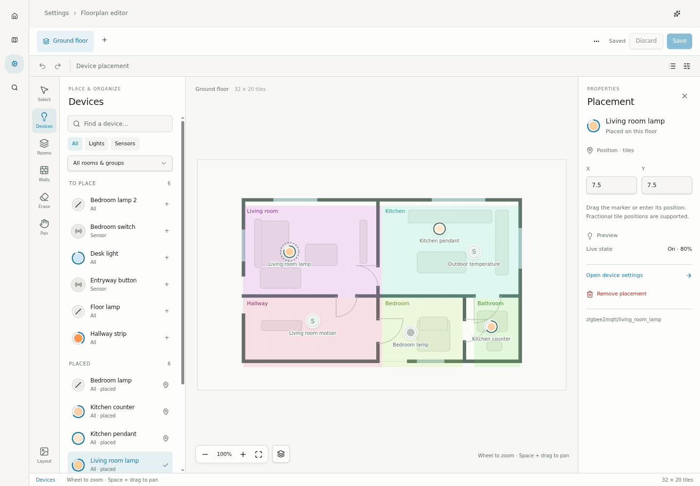
Room areas
Room masks use the same canvas and tool options, with room membership and related settings in the inspector.


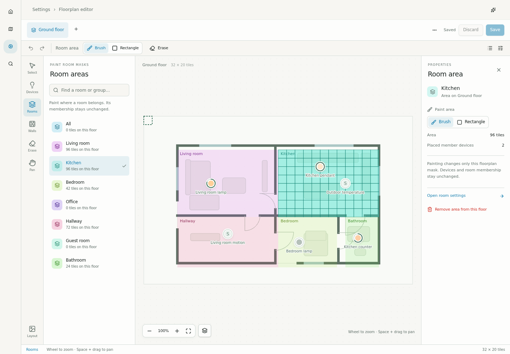
Walls
Materials and drawing controls belong to the active tool. A completed stroke is one undo step.


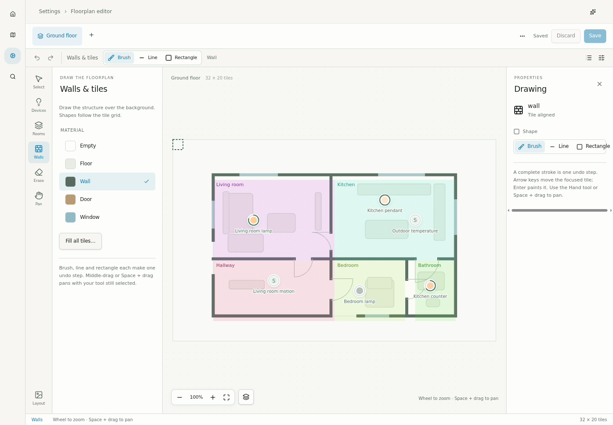
Layout
Background and document settings stay in the library; grid dimensions and resize actions are available without scrolling the page.


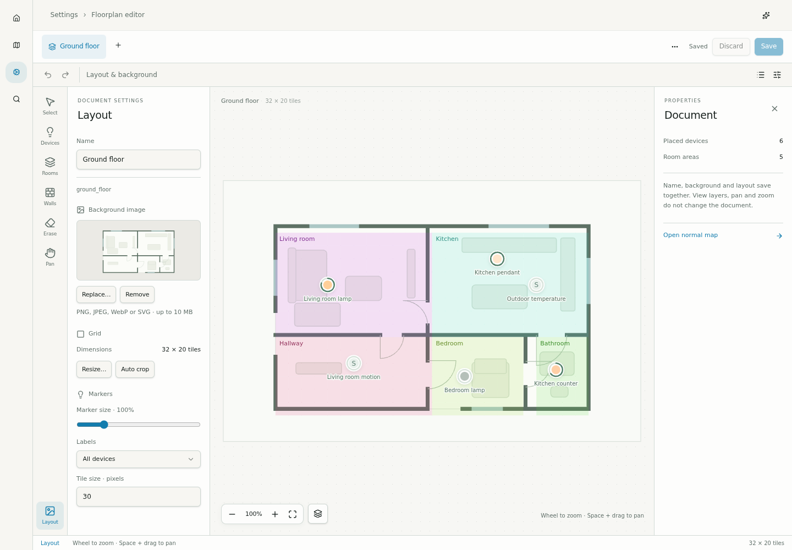
Phone canvas
The canvas remains fixed while all seven tools are available along the bottom. Pinch and pan navigate without painting.


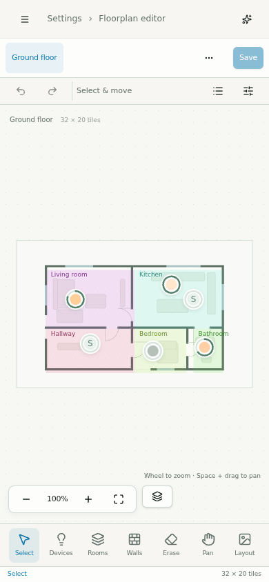
Phone device library
A single contextual tray holds search, filters and placed/unplaced devices. The overview remains visible above it.


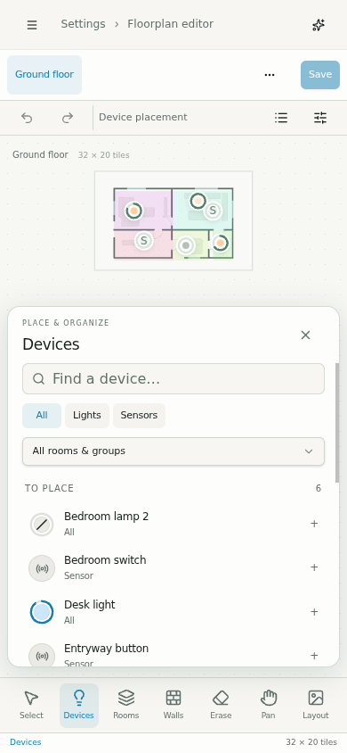
Phone placement inspector
Selecting a placement restores a readable scale and positions the selection above the tray. Coordinates and the related device link are directly accessible.


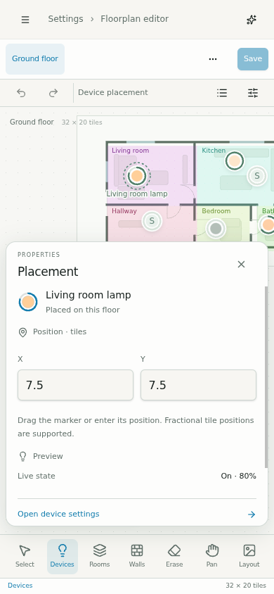
Phone room areas
Room properties use the same tray structure and remain separate from wall painting.


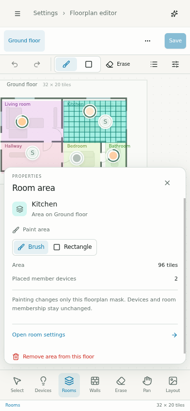
Additional implementation states
Both side panels can collapse. A new phone document opens Layout immediately; the same tools fit a 360 px viewport.

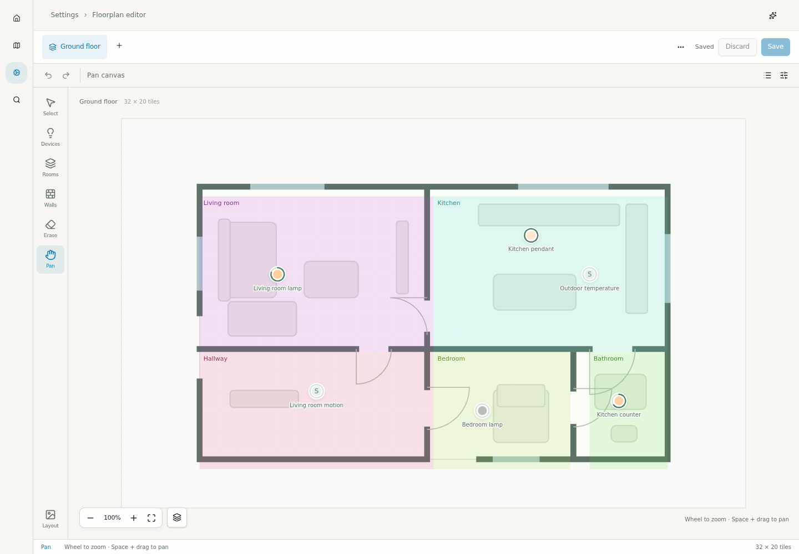

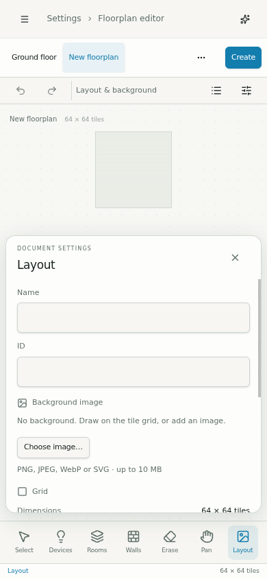

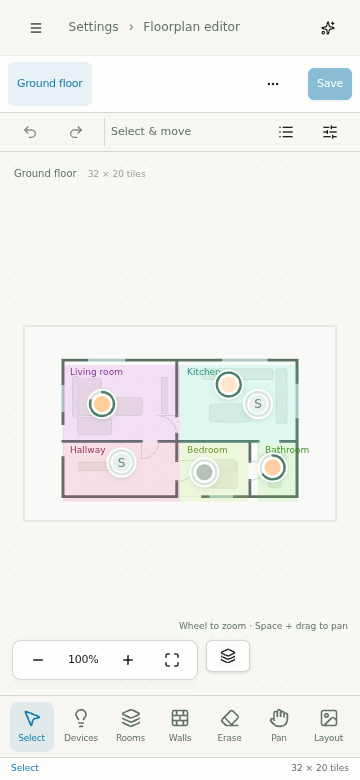